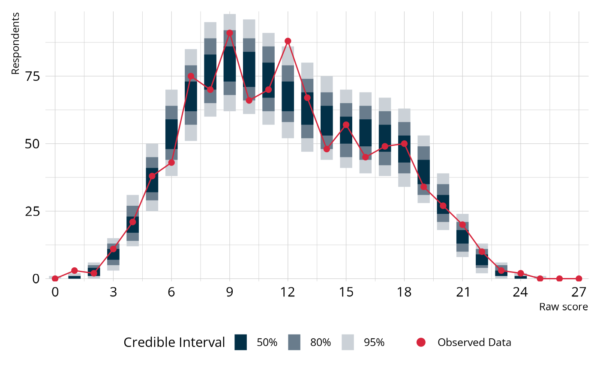
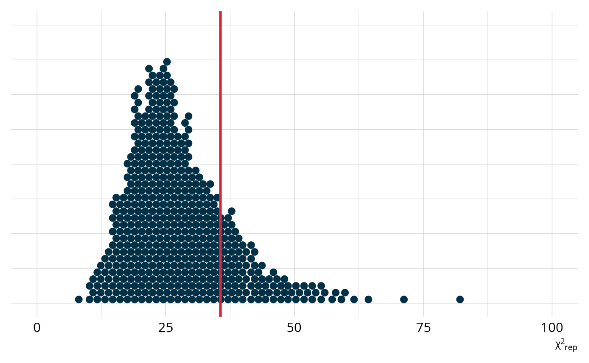
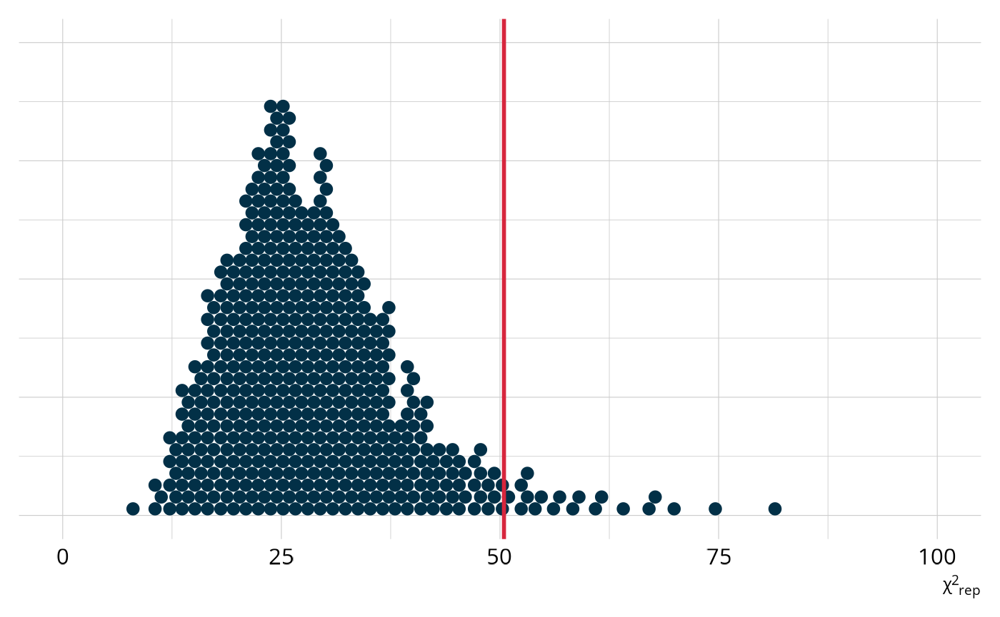

Evaluate model performance
Measure model performance through fit, comparisons, and reliability.
Introduction
Once you’ve estimated a DCM, the natural next question is: does this model actually work? Before reporting results or making decisions based on proficiency classifications, we want evidence that the model is doing a good job of representing the data. In this article, we’ll walk through four complementary approaches to evaluating a DCM:
- Absolute fit: Does the model fit the observed data?
- Relative fit: When comparing competing models, which one fits better?
- Classification reliability: How consistent and accurate are the proficiency classifications?
- Misfit diagnostics: If something seems off, where is the problem?
To use code in this article, you will need to install the following packages: dcmdata, measr, and rstan.
Diagnosing Teachers’ Multiplicative Reasoning (DTMR) data
We’ll use data from the DTMR project to demonstrate each of these evaluation tools. The DTMR assessment measures four attributes related to multiplicative reasoning in mathematics teachers. In total, the DTMR data contains responses to 27 items from 990 respondents.
dtmr_data
#> # A tibble: 990 × 28
#> id `1` `2` `3` `4` `5` `6` `7` `8a` `8b` `8c` `8d` `9`
#> <fct> <int> <int> <int> <int> <int> <int> <int> <int> <int> <int> <int> <int>
#> 1 0008… 1 1 0 1 0 0 1 1 0 1 1 0
#> 2 0009… 0 1 0 0 0 0 0 1 1 1 0 1
#> 3 0024… 0 1 0 0 0 0 1 1 1 1 0 0
#> 4 0031… 0 1 0 0 1 0 1 1 1 0 0 0
#> 5 0061… 0 1 1 0 0 0 0 0 0 1 0 0
#> 6 0087… 0 1 1 1 0 0 0 1 1 1 1 0
#> 7 0092… 0 1 1 1 1 0 0 1 1 1 0 0
#> 8 0097… 0 0 0 1 0 0 0 1 0 1 0 0
#> 9 0111… 0 1 1 0 0 0 0 1 0 1 1 0
#> 10 0121… 0 1 0 0 0 0 0 1 1 1 1 0
#> # ℹ 980 more rows
#> # ℹ 15 more variables: `10a` <int>, `10b` <int>, `10c` <int>, `11` <int>,
#> # `12` <int>, `13` <int>, `14` <int>, `15a` <int>, `15b` <int>, `15c` <int>,
#> # `16` <int>, `17` <int>, `18` <int>, `21` <int>, `22` <int>Alongside the response data, we also have a Q-matrix that maps items to the 4 attributes measured by the assessment. These attributes represent aspects of multiplicative reasoning including and understanding of referent units, partitioning and iterating, appropriateness, and multiplicative comparison. For more information on the data set, see ?dtmr and Bradshaw et al. (2014).
dtmr_qmatrix
#> # A tibble: 27 × 5
#> item referent_units partitioning_iterating appropriateness
#> <chr> <dbl> <dbl> <dbl>
#> 1 1 1 0 0
#> 2 2 0 0 1
#> 3 3 0 1 0
#> 4 4 1 0 0
#> 5 5 1 0 0
#> 6 6 0 1 0
#> 7 7 1 0 0
#> 8 8a 0 0 1
#> 9 8b 0 0 1
#> 10 8c 0 0 1
#> # ℹ 17 more rows
#> # ℹ 1 more variable: multiplicative_comparison <dbl>One particularly useful feature of the DTMR data for learning purposes is that it was simulated from known parameters. The actual data set is not publicly available. However, dcmdata provides an artificial data set with the same number of items and respondents, using the parameter estimates reported by Bradshaw et al. (2014) and Izsák et al. (2019). This means that the data set we are using will match the characterisitics of the real data, but we know what the true model parameters should be. For example, because this data was simulated from a loglinear cognitive diagnostic model (LCDM; Henson et al., 2009), we know that we should see good model performance when estimating an LCDM to this data. Conversely, we should see poor performance if we estimate a more restrictive model, such as the deterministic input, noisy “and” gate model (DINA; de la Torre & Douglas, 2004). And that’s exactly what makes this dataset a great learning example. We’ll see what both good and bad fit look like and learn how to recognize it.
Some of the evaluation tools we’ll use require the full Bayesian posterior distribution, which means we need to estimate the model using MCMC. Let’s specify and estimate two models now. First, we’ll estimate and LCDM that we know should show good fit and performance.
lcdm_spec <- dcm_specify(
qmatrix = dtmr_qmatrix,
identifier = "item",
measurement_model = lcdm(),
structural_model = unconstrained()
)
dtmr_lcdm <- dcm_estimate(
lcdm_spec,
data = dtmr_data,
identifier = "id",
method = "mcmc",
backend = "rstan",
chains = 4,
iter = 1500,
warmup = 1000,
file = here::here("start", "fits", "dtmr-lcdm-mcmc-rstn")
)Next, we’ll estimate a DINA model. The DINA model puts constraints on the LCDM, so this model should show worse performance than our LCDM.
dina_spec <- dcm_specify(
qmatrix = dtmr_qmatrix,
identifier = "item",
measurement_model = dina(),
structural_model = unconstrained()
)
dtmr_dina <- dcm_estimate(
dina_spec,
data = dtmr_data,
identifier = "id",
method = "mcmc",
backend = "rstan",
chains = 4,
iter = 2500,
warmup = 2000,
control = list(adapt_delta = .99),
file = here::here("start", "fits", "dtmr-dina-mcmc-rstn")
)Absolute model fit
Absolute fit asks a direct question: does the model fit the data? We have two tools for answering it with measr: the M2 statistic, which works with any estimation method, and posterior predictive model checks (PPMCs), which require a full posterior from either MCMC estimation or a variational inference algorithm.
M2 statistic
The M2 statistic is a limited-information goodness-of-fit measure originally developed by Maydeu-Olivares & Joe (2005, 2006) and adapted for DCMs by Liu et al. (2016). “Limited-information” means the statistic summarizes fit using item-pair statistics rather than the full multivariate response pattern, making it practical for assessments with many items.
The null hypothesis is that the model fits the data. A large M2 (relative to the degrees of freedom, df) with a small p-value suggests the model does not adequately reproduce the observed data patterns. We can calculate the M2 for any measr model with fit_m2(). In addition to the M2 statistic and its p-value, the function also returns the root mean square error of approximation (RMSEA) with a 90% confidence interval and the standardized root mean square residual (SRMSR) as supplementary fit indices.
fit_m2(dtmr_lcdm)
#> # A tibble: 1 × 8
#> m2 df pval rmsea ci_lower ci_upper `90% CI` srmsr
#> <dbl> <int> <dbl> <dbl> <dbl> <dbl> <chr> <dbl>
#> 1 266. 293 0.869 0 0 0.0068 [0, 0.0068] 0.0273Since the DTMR data was generated from an LCDM, we expect good fit here. A non-significant p-value means we cannot reject the null hypothesis that the model fits, and small RMSEA and SRMSR values indicate the model closely reproduces the observed item-pair statistics.
Contrast that with the fit results for the DINA model. The M2 is quite large with a very small p-value, and both the RMSEA and SRMSR are more elevated. This is expected in this example, because we know that the DINA model has more constraints than the model that was used to generate this data set.
fit_m2(dtmr_dina)
#> # A tibble: 1 × 8
#> m2 df pval rmsea ci_lower ci_upper `90% CI` srmsr
#> <dbl> <int> <dbl> <dbl> <dbl> <dbl> <chr> <dbl>
#> 1 452. 309 0.000000203 0.0216 0.0172 0.0258 [0.0172, 0.0258] 0.0719Posterior predictive model checks
Posterior predictive model checks (PPMCs) are a Bayesian approach to evaluating model fit (Park et al., 2015). The idea is to simulate many replicated datasets from the estimated model posterior, then ask: does our observed data look like data the model would generate? If the model is well-specified, the observed data should be indistinguishable from the replicated data.
fit_ppmc() performs a PPMC based on the raw score distribution. It simulates replicated datasets from the posterior, calculates the distribution of raw scores for each, and compares this distribution to our observed data. Because PPMCs require draws from the full posterior distribution, they only work with model estimated by a method that produces a posterior (i.e., MCMC, variational inference).
lcdm_ppmc <- fit_ppmc(dtmr_lcdm, model_fit = "raw_score")
lcdm_ppmc
#> $ppmc_raw_score
#> # A tibble: 1 × 5
#> obs_chisq ppmc_mean `2.5%` `97.5%` ppp
#> <dbl> <dbl> <dbl> <dbl> <dbl>
#> 1 35.6 30.0 13.1 56.8 0.201The key output is the posterior predictive p-value (ppp), which is the proportion of replicated datasets that produced a larger fit statistic than our observed data. For a well-fitting model, the observed data should fall in the middle of the replicated distribution, giving a ppp near 0.5. Values near 0 indicate that the observed data produces a fit statistic with a much larger value than expected by replicated datasets; values near 1 would indicate the opposite. In this case, our ppp values is 0.201, indicating that 20.1% of replicated data sets had a larger fit statistic than our observed data.
Let’s visualize the PPMC to see how the observed raw score distribution compares to the replicated data.
Plot code
library(tidyverse)
library(ggdist)
obs_scores <- dtmr_data |>
pivot_longer(cols = -"id") |>
summarize(raw_score = sum(value), .by = id) |>
count(raw_score) |>
complete(raw_score = 0:(ncol(dtmr_data) - 1), fill = list(n = 0L))
fit_ppmc(dtmr_lcdm, model_fit = "raw_score", return_draws = 2000) |>
pluck("ppmc_raw_score") |>
select(rawscore_samples) |>
unnest(rawscore_samples) |>
unnest(raw_scores) |>
ggplot() +
stat_interval(
aes(x = raw_score, y = n, color_ramp = after_stat(level)),
point_interval = "mean_qi",
color = msr_colors[2],
linewidth = 5,
show.legend = c(color = FALSE)
) +
geom_line(
data = obs_scores,
aes(x = raw_score, y = n),
color = msr_colors[3]
) +
geom_point(
data = obs_scores,
aes(x = raw_score, y = n, fill = "Observed Data"),
shape = 21,
color = msr_colors[3],
size = 2
) +
scale_color_ramp_discrete(
from = "white",
range = c(0.2, 1),
breaks = c(0.5, 0.8, 0.95),
labels = ~ paste0(as.numeric(.x) * 100, "%")
) +
scale_fill_manual(values = c(msr_colors[3])) +
scale_x_continuous(breaks = seq(0, 27, 3), expand = c(0, 0)) +
scale_y_comma() +
labs(
x = "Raw score",
y = "Respondents",
color_ramp = "Credible Interval",
fill = NULL
) +
guides(fill = guide_legend(override.aes = list(size = 3)))
The blue bars show the 50%, 80%, and 95% credible intervals for the expected number of respondents at each score point, based on the model (i.e., the distribution across the replicated data sets). The red line and points show the counts from our observed data set. When the model fits well, the red line threads through the middle of the blue intervals rather than wandering outside them.
We can also examine the distribution of χ2-like statistics calculated from the replicated datasets (Thompson, 2019). For each replicated dataset, we compute how much it differs from the expected raw score distribution. This creates a distribution of plausible χ2 values under the model. The χ2 is our fit statistic in this PPMC, and the ppp value is the proportion of replicated χ2 values that exceed the observed value (as indicated by the red line). In this example, we see that the observed value is toward the middle, which is exactly what we would expect from a well-fitting model.
Plot code
fit_ppmc(dtmr_lcdm, model_fit = "raw_score", return_draws = 2000) |>
pluck("ppmc_raw_score") |>
select(chisq_samples) |>
unnest(chisq_samples) |>
ggplot(aes(x = chisq_samples)) +
stat_dots(
quantiles = 500,
layout = "hex",
stackratio = 0.9,
color = msr_colors[2],
fill = msr_colors[2],
na.rm = TRUE
) +
geom_vline(
xintercept = dtmr_lcdm@fit$ppmc_raw_score$obs_chisq,
color = msr_colors[3],
linewidth = 1
) +
coord_cartesian(xlim = c(0, 100)) +
labs(y = NULL, x = "χ^2^<sub>rep</sub>") +
theme(axis.text.y = element_blank(), axis.ticks.y = element_blank())
Compare this to the same χ2 plot for the DINA model. For this model, the observed value is further out in the tail of the distribution of expected values. Accordingly, our ppp value is only 0.052.
Plot code
fit_ppmc(dtmr_dina, model_fit = "raw_score", return_draws = 2000) |>
pluck("ppmc_raw_score") |>
select(chisq_samples) |>
unnest(chisq_samples) |>
ggplot(aes(x = chisq_samples)) +
stat_dots(
quantiles = 500,
layout = "hex",
stackratio = 0.9,
color = msr_colors[2],
fill = msr_colors[2],
na.rm = TRUE
) +
geom_vline(
xintercept = dtmr_dina@fit$ppmc_raw_score$obs_chisq,
color = msr_colors[3],
linewidth = 1
) +
# scale_x_continuous(limits = c(0, 250)) +
coord_cartesian(xlim = c(0, 100)) +
labs(y = NULL, x = "χ^2^<sub>rep</sub>") +
theme(axis.text.y = element_blank(), axis.ticks.y = element_blank())
Relative model fit
Absolute fit asks whether the model fits the data. Relative fit asks a different question: Among several candidate models, which fits better? This distinction matters because sometimes multiple models may show adequate absolute model fit, and we need to choose the best model to implement. In our example, we have one model that fits well and one that doesn’t so we don’t really need an evaluation of relative model fit to determine which is better. However, we’ll run comparison to illustrate idea.
We recommend using leave-one-out cross-validation (LOO) estimates for model comparisons (Vehtari et al., 2017). LOO approximates how well the model would predict new, unseen data. Higher expected log predictive density (ELPD) values indicate better out-of-sample predictive performance. loo_compare() uses the loo package to directly compare the models, rank them by ELPD and report the difference along with its standard error.
loo_compare(dtmr_lcdm, dtmr_dina)
#> elpd_diff se_diff
#> dtmr_lcdm 0.0 0.0
#> dtmr_dina -195.5 19.2The model with the higher ELPD is listed first. A difference in ELPD that is large relative to its standard error (roughly more than 2.5 times) provides strong evidence that one model genuinely fits better. Since the data was simulated from an LCDM, the LCDM should show a substantially higher ELPD than the DINA, reflecting that the LCDM is a better match for the true data-generating process.
Classification reliability
Even after examining fit, it’s worth asking a separate question. Regardless of how well the model fits the data at an overall level, how reliable are the individual classifications it produces? For practical applications of DCMs,like providing feedback to teachers about specific competencies, the reliability of those classifications matters as much as overall model fit.
reliability() calculates several types of reliability evidence from our estimated model.
lcdm_reliability <- reliability(dtmr_lcdm)
lcdm_reliability
#> $pattern_reliability
#> p_a p_c
#> 0.7211589 0.6007968
#>
#> $map_reliability
#> $map_reliability$accuracy
#> # A tibble: 4 × 8
#> attribute acc lambda_a kappa_a youden_a tetra_a tp_a tn_a
#> <chr> <dbl> <dbl> <dbl> <dbl> <dbl> <dbl> <dbl>
#> 1 referent_units 0.926 0.785 0.367 0.828 0.968 0.875 0.952
#> 2 partitioning_iterating 0.925 0.847 0.849 0.849 0.972 0.924 0.926
#> 3 appropriateness 0.891 0.725 0.733 0.764 0.938 0.925 0.838
#> 4 multiplicative_comparison 0.924 0.803 0.146 0.840 0.969 0.938 0.902
#>
#> $map_reliability$consistency
#> # A tibble: 4 × 10
#> attribute consist lambda_c kappa_c youden_c tetra_c tp_c tn_c gammak
#> <chr> <dbl> <dbl> <dbl> <dbl> <dbl> <dbl> <dbl> <dbl>
#> 1 referent_units 0.875 0.625 0.665 0.719 0.909 0.813 0.907 0.890
#> 2 partitioning_ite… 0.868 0.733 0.849 0.736 0.915 0.870 0.866 0.889
#> 3 appropriateness 0.828 0.547 0.682 0.635 0.844 0.862 0.773 0.843
#> 4 multiplicative_c… 0.877 0.682 0.757 0.741 0.920 0.900 0.841 0.896
#> # ℹ 1 more variable: pc_prime <dbl>
#>
#>
#> $eap_reliability
#> # A tibble: 4 × 5
#> attribute rho_pf rho_bs rho_i rho_tb
#> <chr> <dbl> <dbl> <dbl> <dbl>
#> 1 referent_units 0.787 0.756 0.600 0.930
#> 2 partitioning_iterating 0.796 0.779 0.637 0.940
#> 3 appropriateness 0.740 0.673 0.564 0.873
#> 4 multiplicative_comparison 0.812 0.781 0.632 0.943measr returns three categories of reliability: pattern reliability, MAP (maximum a posteriori) reliability, and EAP (expected a posteriori) reliability. Each reflects a different way of reporting results, and the most relevant indices depend on how proficiency scores are determined and used. For a comprehensive review of reliability methods for DCMs, see Sinharay & Johnson (2019).
Pattern reliability
Pattern reliability evaluates the consistency and accuracy of classifying respondents into an overall profile—the complete pattern of proficiency across all attributes simultaneously. Cui et al. (2012) describe two indices, p_a and p_c:
- pa is the probability of classifying a random respondent into the correct class.
- pc is the probability of consistently classifying a random respondent into the same class across two test administrations.
These indices range from 0 to 1, with 1 indicating perfect accuracy or consistency, and 0 indicating the opposite.
lcdm_reliability$pattern_reliability
#> p_a p_c
#> 0.7211589 0.6007968MAP reliability
MAP reliability evaluates accuracy and consistency at the attribute level, where each attribute is classified separately using a threshold (typically .5) applied to the estimated proficiency probability. Johnson & Sinharay (2018) describe two primary indices, Pak (acc) and Pck (consist):
- Pak is the accuracy of the attribute classification, or how often the classification matches the true latent state.
- Pck is the consistency of the classification across parallel test administrations.
In addition, Johnson & Sinharay (2018) demonstrate how other agreement indices, such as Goodman and Kruskal’s λ and Cohen’s κ, can be used to evaluate accuracy and consistency at the attribute level. All indices are returned by reliability().
lcdm_reliability$map_reliability
#> $accuracy
#> # A tibble: 4 × 8
#> attribute acc lambda_a kappa_a youden_a tetra_a tp_a tn_a
#> <chr> <dbl> <dbl> <dbl> <dbl> <dbl> <dbl> <dbl>
#> 1 referent_units 0.926 0.785 0.367 0.828 0.968 0.875 0.952
#> 2 partitioning_iterating 0.925 0.847 0.849 0.849 0.972 0.924 0.926
#> 3 appropriateness 0.891 0.725 0.733 0.764 0.938 0.925 0.838
#> 4 multiplicative_comparison 0.924 0.803 0.146 0.840 0.969 0.938 0.902
#>
#> $consistency
#> # A tibble: 4 × 10
#> attribute consist lambda_c kappa_c youden_c tetra_c tp_c tn_c gammak
#> <chr> <dbl> <dbl> <dbl> <dbl> <dbl> <dbl> <dbl> <dbl>
#> 1 referent_units 0.875 0.625 0.665 0.719 0.909 0.813 0.907 0.890
#> 2 partitioning_ite… 0.868 0.733 0.849 0.736 0.915 0.870 0.866 0.889
#> 3 appropriateness 0.828 0.547 0.682 0.635 0.844 0.862 0.773 0.843
#> 4 multiplicative_c… 0.877 0.682 0.757 0.741 0.920 0.900 0.841 0.896
#> # ℹ 1 more variable: pc_prime <dbl>EAP reliability
EAP reliability evaluates the precision of the probability of proficiency itself, rather than a binary classification. Johnson & Sinharay (2020) describe four reliability metrics for this purpose and recommend using the biserial (rho_bs) and informational (rho_i) indices, as the parallel form estimates tend to overestimate reliability.
lcdm_reliability$eap_reliability
#> # A tibble: 4 × 5
#> attribute rho_pf rho_bs rho_i rho_tb
#> <chr> <dbl> <dbl> <dbl> <dbl>
#> 1 referent_units 0.787 0.756 0.600 0.930
#> 2 partitioning_iterating 0.796 0.779 0.637 0.940
#> 3 appropriateness 0.740 0.673 0.564 0.873
#> 4 multiplicative_comparison 0.812 0.781 0.632 0.943EAP reliability is typically lower than MAP reliability, because placing a respondent at a specific probability (a continuous scale) is harder than placing them into a binary category. That said, both MAP and EAP reliability can be adequate even when overall model fit is not perfect, which is one reason it’s important to evaluate both fit and reliability.
Wrapping up
So far we’ve discussed various ways we can evaluate whether our model has good fit and provides accurate and reliable results. But what do we do if the answer is “no”? A good place to start is often examining your structural model and ensuring that attribute relationships are appropriately included. That is the focus of the Define Attribute Relationships article.
Session information
#> ─ Session info ─────────────────────────────────────────────────────
#> version R version 4.5.2 (2025-10-31)
#> language (EN)
#> date 2026-04-04
#> pandoc 3.9
#> quarto 1.9.24
#> Stan (rstan) 2.37.0
#>
#> ─ Packages ─────────────────────────────────────────────────────────
#> package version date (UTC) source
#> bridgesampling 1.2-1 2025-11-19 CRAN (R 4.5.2)
#> dcmdata 0.2.0 2026-03-10 CRAN (R 4.5.2)
#> dcmstan 0.1.0 2025-11-24 CRAN (R 4.5.2)
#> dplyr 1.2.0 2026-02-03 CRAN (R 4.5.2)
#> forcats 1.0.1 2025-09-25 CRAN (R 4.5.0)
#> ggplot2 4.0.2 2026-02-03 CRAN (R 4.5.2)
#> loo 2.9.0.9000 2025-12-30 https://stan-dev.r-universe.dev (R 4.5.2)
#> lubridate 1.9.5 2026-02-04 CRAN (R 4.5.2)
#> measr 2.0.0.9000 2026-03-21 Github (r-dcm/measr@475bc50)
#> posterior 1.6.1.9000 2025-12-30 https://stan-dev.r-universe.dev (R 4.5.2)
#> purrr 1.2.1 2026-01-09 CRAN (R 4.5.2)
#> readr 2.2.0 2026-02-19 CRAN (R 4.5.2)
#> rlang 1.1.7 2026-01-09 CRAN (R 4.5.2)
#> rstan 2.36.0.9000 2025-09-26 https://stan-dev.r-universe.dev (R 4.5.1)
#> stringr 1.6.0 2025-11-04 CRAN (R 4.5.0)
#> tibble 3.3.1 2026-01-11 CRAN (R 4.5.2)
#> tidyr 1.3.2 2025-12-19 CRAN (R 4.5.2)
#>
#> ────────────────────────────────────────────────────────────────────